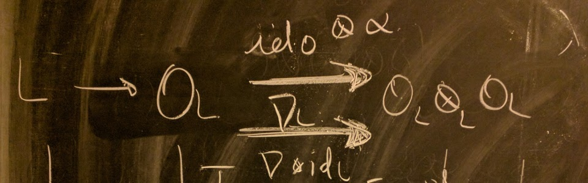
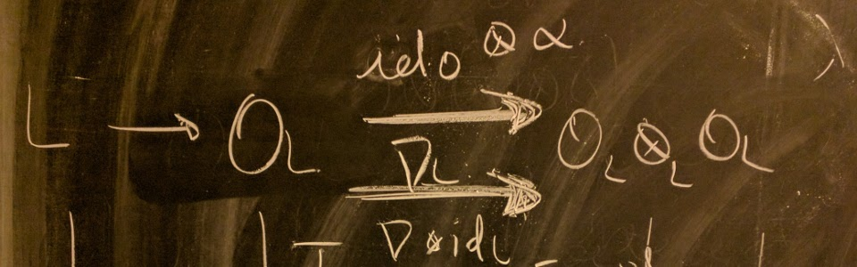

Contact
Office: 200B 01.28
E-mail: javier.carvajal-rojas (at) kuleuven (dot) be
Mailing address:
Celestijnenlaan 200B-Bus 2400
B-3001 Leuven
Belgium
About me
I'm a Costa Rican mathematician working as a postdoc at the KU Leuven's Section of Algebra headed by Prof. Wim Veys. Before this, I was a postdoc at the EPFL's Chair of Algebraic Geometry under the direction of Prof. Zsolt Patakfalvi.
I obtained my Ph.D. degree in August of 2018 at the University of Utah under the supervision of Prof. Karl Schwede. I defended my Ph.D. thesis in April 2018 under the title "Arithmetic Aspects of Strong F-regularity." I obtained my bachelor's degree at the Universidad de Costa Rica in 2013. I graduated from the Colegio Científico Costarricense (Puntarenas) in 2007---this place really sparked my passion for mathematics.
I had a stroke of luck and I'm currently living at the Groot Begijnhof. So yeah... I happen to live in a pretty cool medieval appartment.
My CV (Updated March 2023)
I cosign Federico Ardilla's four axioms of mathematics:
Axiom 1. Mathematical potential is distributed equally among different groups, irrespective of geographic, demographic, and economic boundaries.
Axiom 2. Everyone can have joyful, meaningful, and empowering mathematical experiences.
Axiom 3. Mathematics is a powerful, malleable tool that can be shaped and used differently by various communities to serve their needs.
Axiom 4. Every student deserves to be treated with dignity and respect.